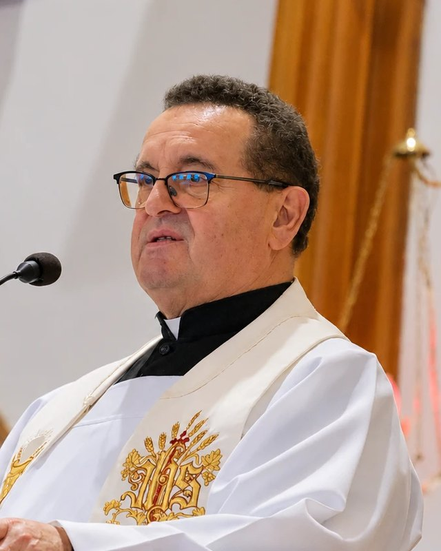
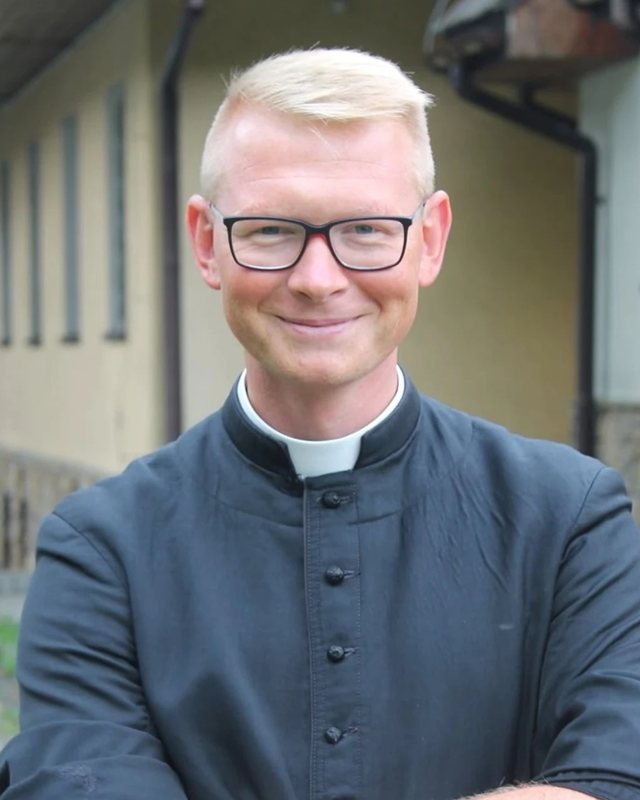

Proboszcz
Ks. kan. Andrzej Szyc RM
W parafii od 2002 r.
proboszcz@swtrojca.pl · proboszczswtrojca@gmail.com
tel. 694 453 433, kancelaria 71 362 82 54
Kapłani posługujący w naszej parafii

Proboszcz
W parafii od 2002 r.
proboszcz@swtrojca.pl · proboszczswtrojca@gmail.com
tel. 694 453 433, kancelaria 71 362 82 54

Wikariusz
W parafii od 2020 r.
jakub.deperas3@gmail.com · tel. 71 362 81 62 (wspólny numer wikariuszy)
Wikariusz
W parafii od 2023 r.
tel. 71 362 81 62 (wspólny numer wikariuszy)